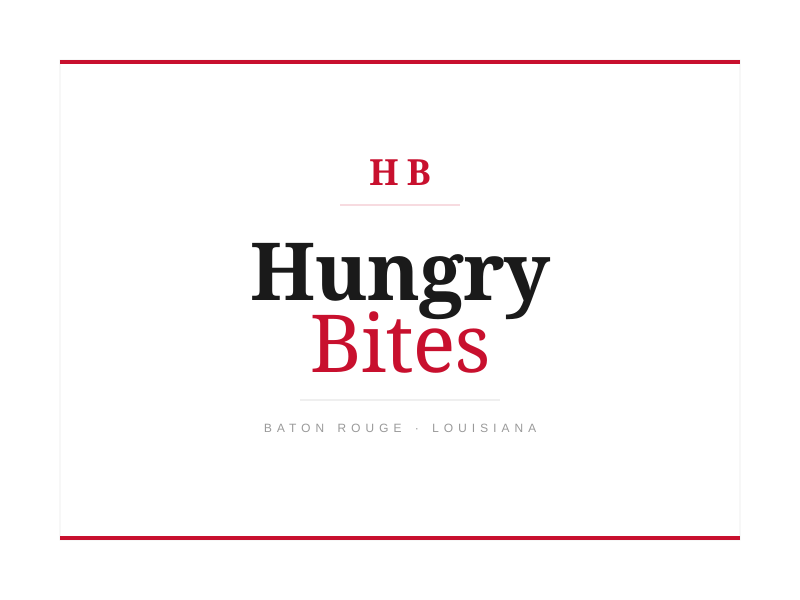
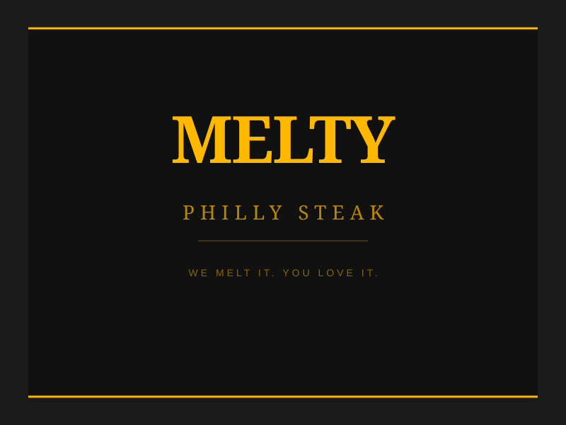
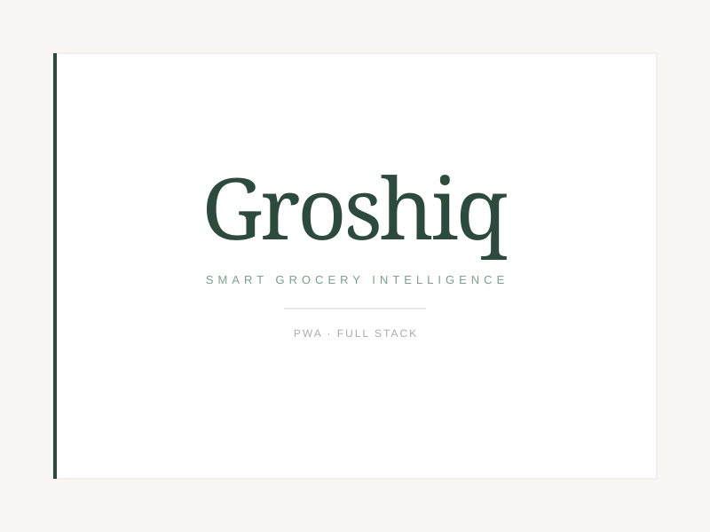
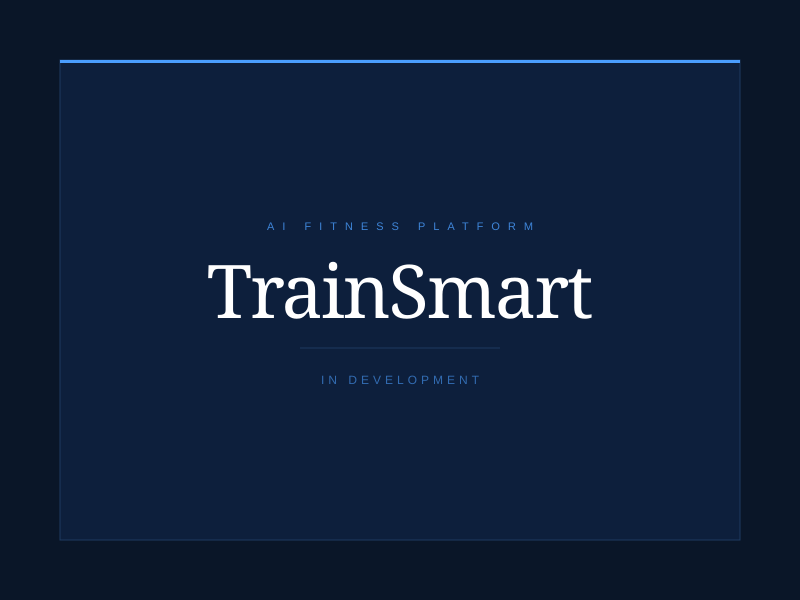

Turning complex business challenges into efficient software solutions. I build technology that adapts to the way your business operates, whether by optimizing workflows, unlocking insights from data, or developing custom applications from the ground up. Specialized in Odoo ERP and full-stack web development, backed by an MBA in Data Analytics.
I'm a software developer and Odoo consultant based in Baton Rouge, Louisiana. Most developers start by writing code. I start by finding the real problem. Whether it's a workflow, your data, or the software itself, I figure out what's actually costing you before I build anything.
At Systems Services Inc. I work with Odoo every day, no matter the version the client is on. I build custom modules, handle API integrations, and take care of version migrations. A big part of the job is sitting down with clients to understand what's actually going wrong and helping them solve it, not just writing code but understanding the business behind it. Support isn't a detail. It's what keeps the operation running and delivering results.
I hold a BA in Computer Science, an MBA in Data Analytics, and a professional certificate in Data Science from MIT. That mix of engineering and business judgment is what I bring to every project, and it's the difference between software that works and software that actually solves the problem.
I build web apps and software products from scratch. Full-stack, production-ready, and built to scale, from simple landing pages to complex platforms with payments, authentication, and API integrations.
I work across the full Odoo platform, from custom modules and version migrations to POS extensions and API integrations. If your ERP isn't doing what your business needs, I find the gap and fix it.
If your team does something manually that a system should handle, like invoicing, inventory updates, reporting, or notifications, I build the automation that takes it off your plate for good.
I turn raw data into decisions with custom dashboards, analytics pipelines, and reporting systems built on your actual numbers. Backed by an MBA in Data Analytics and an MIT certificate in Data Science.
I add AI to your existing business, from chatbots that handle customer questions around the clock to voice agents for calls and reception, plus smart features built right into your apps and workflows. Real tools that save your team time, not demos.
A new restaurant that needed a full website to get started. I designed and built it from the ground up, including the menu, layout, and contact, and deployed it live for them.

Their website was not working properly and looked inconsistent across devices. I fixed the existing issues, added new features, improved the layout, and made sure everything worked smoothly on every screen size.

A web app I designed and built end to end. It tracks your purchase history, learns your habits, and predicts what you're running low on before you run out. React frontend, FastAPI backend, PostgreSQL database.

A platform where personal trainers manage their clients, build workout plans, and handle subscriptions. Clients get an AI coaching assistant and progress tracking. Currently in development.

Nicholas did a great job improving our website. He fixed several issues, added the features we needed, and made everything run much better. He was easy to communicate with, kept us updated, and always found a solution when we had questions. We're really happy with the results and would definitely recommend him.
Nicholas built our website from the ground up and made the whole process easy. He listened to what we wanted, gave helpful suggestions, and delivered exactly what we were looking for. Even after the website went live, he continued to help us with updates and support. We're very happy with the final website and would gladly work with him again.
Whether you need a website, a custom Odoo module, or a full application — send me a message and I'll respond within 24 hours.